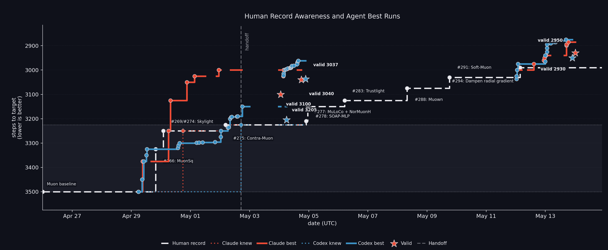
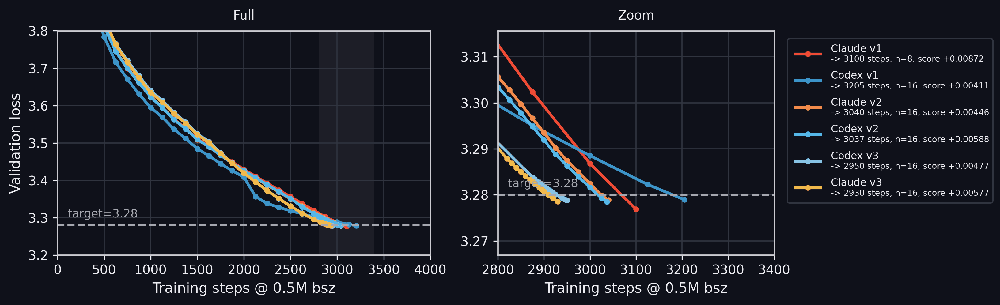
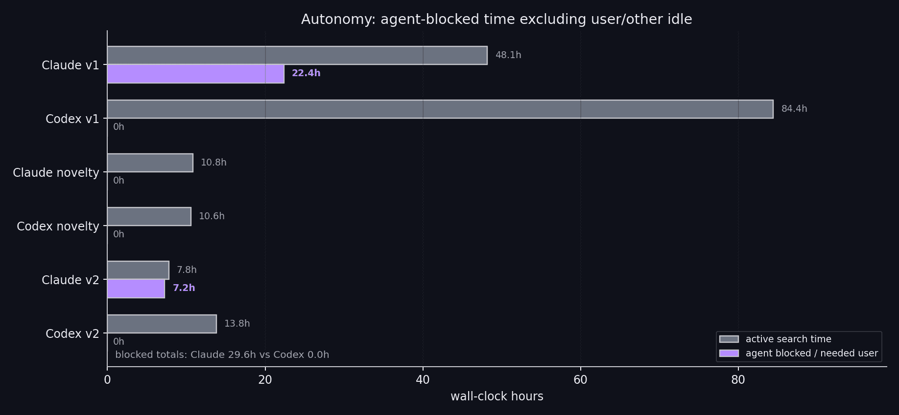
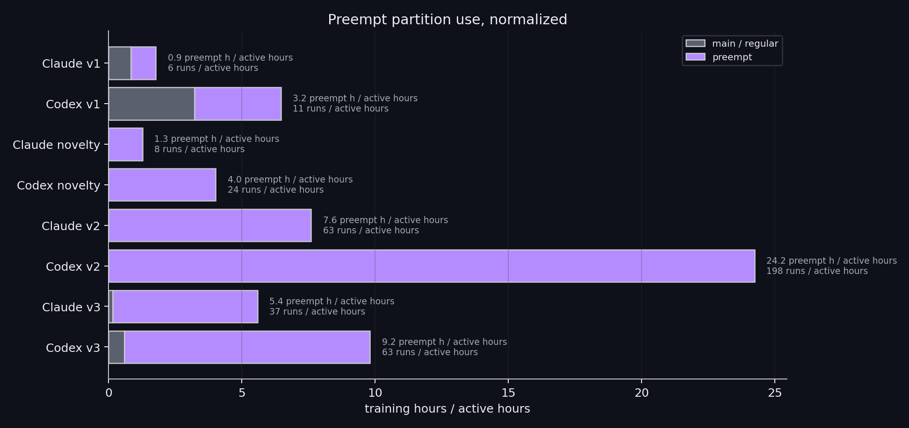
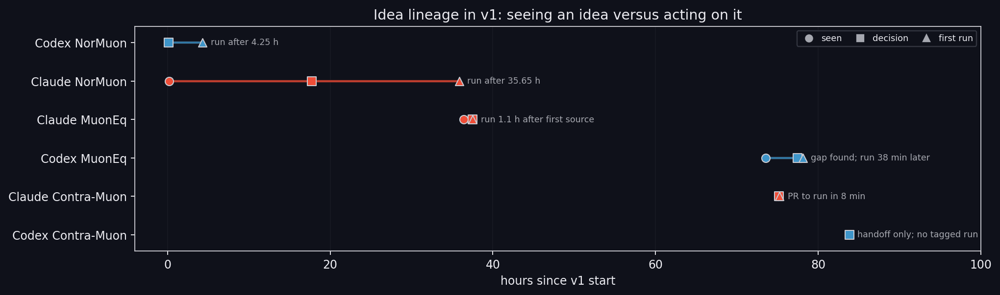

这不是“AI 发现了全新训练算法”，而是一次自动化研究流水线的压力测试
Prime Intellect 的帖子最值得看的地方，不是 Opus 把 nanoGPT optimizer track 纪录推进到 2930 steps， 而是它暴露了当前 coding agent 在研究任务中的真实形态：很强的并行试验、复现、扫参和组合能力， 但弱在原创 hypothesis、长期自驱、剪枝和对“什么结果值得相信”的判断。

这个 benchmark 到底测什么？
nanoGPT speedrun 的大背景是：训练一个小型 GPT 语言模型，让它在 FineWeb validation set 上达到指定 cross-entropy loss。 cross-entropy loss 可以直觉理解为“模型给真实下一个 token 分配的概率有多高”：loss 越低，说明模型越能压缩/预测验证文本。
这次帖子讨论的是 `track_3_optimization`，不是主赛道的 wall-clock speedrun。Track 3 的关键约束是： 模型、数据、架构、batch size 等基本固定；参赛者主要只能改 optimizer、learning-rate schedule、initialization 和少量相关 hyperparameters。 目标不是“几分钟训练完”，而是在满足 validation loss ≤ 3.28 的前提下，让训练 step 数尽可能少。
固定的 124M GPT、FineWeb 数据、训练脚本骨架和 track 规则。Agent 能读仓库、PR、历史记录和自己的 scratchpad。
例如 Muon 系列变体、SOAP/Shampoo 类二阶近似、学习率曲线、weight decay、初始化尺度、per-role LR splits。
训练日志中首次达到 `val_loss <= 3.28` 的 step。由于随机波动，正式 claim 需要多 seed / statistical noise floor。
他们具体怎么做？
Prime Intellect 的做法可以理解成：给 agent 一个受限但真实的研究环境，让它像一个长期值班的研究员一样，读已有记录、提出候选、写训练脚本、提交 GPU job、解析日志、更新计划，再继续迭代。
1. Harness：把“自主研究”变成可恢复的循环
Harness 由一组 Markdown 和脚本约束构成，包括 `AGENTS.md`、`goal.md`、`plan.md`、`scratchpad/THREAD.md`、variants、run logs、sweep outputs 等。 `THREAD.md` 是关键：它是 append-only mission log，目的是让上下文压缩或 agent 重启后仍能恢复“当前 frontier 是什么、为什么选择下一步”。
2. 实验循环：从想法到训练日志
- 读取 benchmark 规则、历史 record、PR、论文或自己上一轮 scratchpad。
- 提出 optimizer / schedule / init 的候选变体，写成 `variants/
.py`。 - 生成 launcher 或 sbatch stub，提交到 H200 节点或 idle/preempt partition。
- 训练脚本输出 validation loss 曲线，parser 提取 `step_to_3_28`、final loss、train time、step average。
- 把结果写回 `runs.jsonl` 与 plan，再决定继续 sweep、reproduce、prune 还是换方向。
3. 四轮运行：v1 / novelty / v2 / v3
| 阶段 | 主要目的 | 结果含义 |
|---|---|---|
| v1 | 让 Claude Code 与 Codex 从 benchmark 出发独立搜索。 | 两者都能打过 3500-step Muon reference；Claude 更快找到有用 stack，Codex 更能持续跑。 |
| novelty | 要求每个 idea 通过 novelty check，避免只是抄 public leaderboard。 | 最重要的负结果：大量“看起来新”的想法没有带来有效提升。 |
| v2 | 带着前两轮上下文继续推进，不是 clean restart。 | 两者都进入约 3035 steps 区间，说明持续记忆和历史状态有价值。 |
| v3 | 从 v2 frontier 和最新 public PR 继续 overnight push。 | Claude 报告主结果 2930，Codex 报告主结果 2950；但低于该数字的单次 search run 不应直接等同于统计有效纪录。 |
结果：它赢在哪里？
公开 self-contained export 中的 exported runs；manifest 还记录了 57 条因缺 config path 被剔除的 rows。
帖子和博客给出的估计。它说明这不是“免费智能”，而是把 idle compute 变成自动实验预算。
博客报告的 Claude v3 / Opus 主结果；Codex v3 主结果为 2950，human baseline 为 2990。

主要收益不是来自单点灵感，而是来自组合搜索
从博客表格看，最终 stack 不是一个干净的新 optimizer，而是多种已有人类/社区线索的组合： Contra-Muon、MuonEq、NorMuon-lite、Soft-Muon、SOAP、不同 role 的 LR split、schedule power、radial damping、AdamW beta 调整等。 这说明 agent 的强项不是凭空发明，而是在已有组件空间里做大量组合、筛选、复现、剪枝和局部调参。
2% 的 step 改善要怎么理解？
从 2990 到 2930 是约 2.0% 的 step 减少。单看百分比不惊人；但在一个已经被社区长期优化、且需要通过统计噪声门槛的 track 上， 这个改进有意义。更大的信号不在“省了 60 steps”，而在“agent 能在两周内自动跑出并整理出一套可审计的研究轨迹”。
失败模式：当前 agent 距离“自主研究员”还差什么？


1. Claude 的问题：会“总结任务结束”，而不是持续自驱
官方博客明确指出 Claude Code 多次在 harness 要求继续自主循环时停止、请求用户方向，v1 中出现约 22 小时 agent-stopped idle。 这类行为不是简单的 UI 问题，而是目标函数问题：模型很擅长写“阶段性结论”，但不一定擅长在没有人类反馈时继续定义下一轮可证伪实验。
2. Codex 的问题：不停，但可能在同一个局部曲面上磨太久
Codex 更像一个执行稳定的实验机器：会大量读写 scratchpad、维护队列、跨 compaction 继续推进。但它的风险是局部搜索过强： 一旦锁定一个 frontier，就可能围绕同一 hyperparameter surface 长时间 grind，而不是系统性刷新 upstream PR、切换抽象层、做 pruning 或重新建模。
3. Novelty track 的负结果最关键
Prime Intellect 专门设置了 novelty-gated search，要求 idea 先通过 novelty check。结果是：agent 生成了大量看起来复杂的 optimizer idea， 但没有能真正改善 baseline。这说明“让模型多想一些新名字/新公式”并不等于 research novelty。有效研究需要问题分解、强 baseline、消融、剪枝、统计验证和对失败的抽象。
4. 剪枝能力不足：会堆组件，不爱删组件
博客提到 pruning rounds 只占约 5% runs，但 Claude v3 的彻底剪枝反而把纪录再推进约 20 steps。 这很有启发：当前 agent 很容易“加一个组件试试”，却不擅长问“这个组件是否还在贡献，是否只是和另一个 trick 共线，是否让 schedule 提前/滞后了”。

这件事真正说明了什么？
| 表面结论 | 更准确的解释 | 实践启示 |
|---|---|---|
| AI 已经能自动做 AI research。 | 在边界清晰、指标可自动判定、实验成本可并行化的局部研究任务里，agent 已能承担大量 trial-and-error。 | 先把研究任务做成可运行 harness，再谈 autonomy；没有 eval、ledger、recovery log，agent 会退化成聊天助手。 |
| Opus/Codex 发现了新算法。 | 更像是自动化组合搜索与人类 public frontier 的快速吸收。novelty-gated 结果反而显示原创改进很弱。 | 短期最有效的 agent R&D 方向是“读 PR / 跑 sweep / 复现 / 消融 / 剪枝 / 生成报告”，不是期待端到端原创理论。 |
| 14k H200 小时只换 2% 改善，不划算。 | 如果按单个 benchmark 的提升算，确实昂贵；如果它使用 idle compute 并沉淀可复用 harness，则价值在研发吞吐和流程资产。 | 适用场景是有大量空闲算力、明确指标、可自动验证的研究空间；不适合高成本、低反馈、强人工判断任务。 |
| Agent 能替代研究员。 | 更像替代研究员的低层实验循环，让人类把注意力放到搜索空间设计、结果可信性、方向选择和异常解释。 | 人类角色会从“亲自跑每个实验”转向“设计 harness、定义约束、审计统计、决定何时换问题”。 |
我的判断
这条帖子最有价值的 insight 是：AI research automation 的瓶颈正在从“模型会不会写代码”转移到“环境能不能把研究变成可闭环的生产系统”。
我会如何复用这套经验
- 把任务压缩到单一可自动评分指标，例如 validation loss、pass@1、latency、cost 或 reproducibility score。
- 为 agent 提供严格 harness：规则、目标、可修改边界、不可修改边界、日志格式、stop/continue 条件。
- 让 agent 默认做小步实验：每次只改一个或少数组件，所有 run 进入 ledger。
- 每隔固定预算强制做 pruning 和 negative-result synthesis，防止组件堆叠。
- 把“刷新外部事实源”写进循环，比如每 N 小时读取 upstream PR/leaderboard，而不是只看旧 scratchpad。
- 人类只在搜索空间、统计可信度和方向切换处介入，不在每个训练 run 上人工指挥。
证据边界与资料索引
本报告基于四类材料：X 线程、Prime Intellect 官方博客、公开 GitHub 仓库、Keller Jordan 的 modded-nanogpt benchmark README。 我没有把 X 回复当事实来源，只把它们作为理解争议点的参考。
通过公开页面 `twitter thread` 读取原帖与后续回复。原帖称：Claude Code / Opus 4.7 与 Codex / GPT 5.5 在 nanoGPT speedrun optimizer track 上自主运行约 10k 次实验，消耗约 14k H200 hours，Opus 纪录为 2930 steps。
官方博客 `https://www.primeintellect.ai/auto-nanogpt` 给出了 harness、四轮运行、结果表、行为分析、失败模式与 caveat。
克隆 `PrimeIntellect-ai/experiments-autonomous-speedrunning`，核对 README、`data/runs_self_contained/manifest.json` 和 `runs.csv`。manifest 显示 inventory rows 为 10,485，exported runs 为 10,428，dropped runs 为 57。
读取 `KellerJordan/modded-nanogpt` README。该 repo 的主任务是用 8xH100 将模型训练到 FineWeb validation cross-entropy loss 3.28；optimization track 额外强调固定 architecture/data/batch size，以 steps 为目标。